This chapter shows how to create, mount and use a LambCrypt volume stored in a file (a container). The screenshots were taken from LambCrypt on macOS. On Linux the windows have the same controls but follow the desktop's appearance. We strongly recommend that you also read the other sections of this manual, as they contain important information.
Install LambCrypt as described in Installing LambCrypt, then open it from the Applications folder. The first time it runs, LambCrypt shows its license terms; choose I Accept and Agree to Be Bound by the License Terms to continue.
The main LambCrypt window appears. Click Create Volume.
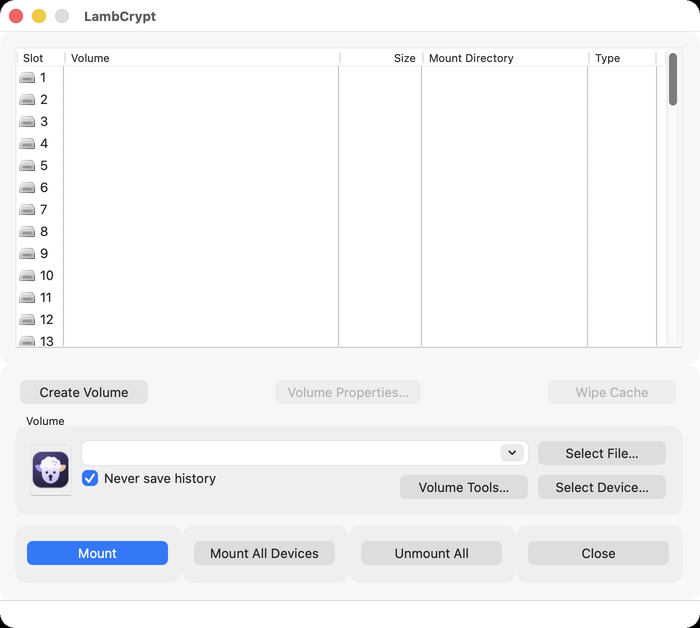
The LambCrypt Volume Creation Wizard appears. Choose where the volume will be created. A LambCrypt volume can reside in a file, called a container, or in a partition or drive. This tutorial uses the first option, Create an encrypted file container, which is selected by default. Click Next.
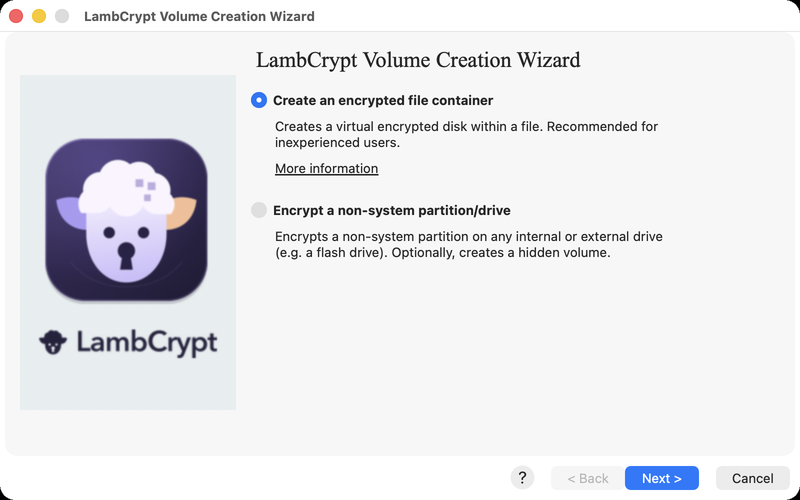
Choose whether to create a standard or a hidden LambCrypt volume. This tutorial creates a standard volume, which is selected by default. Click Next.
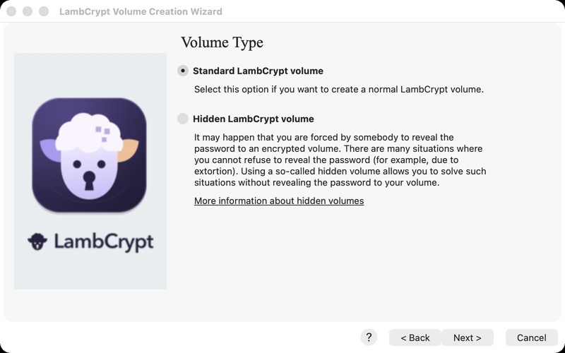
Choose where the container file will be created and what it will be called. Type the full path, or click Select File and choose a folder and file name in the file dialog. This example uses a test folder and the file name MyVolume.hc; you can use any folder and name, including a USB drive. The file must not exist yet. LambCrypt creates it.
IMPORTANT: LambCrypt does not encrypt an existing file. If you select an existing file here, it is deleted and replaced by the new container, and its contents are lost. To encrypt existing files, create the container first and then move the files into the mounted volume.*
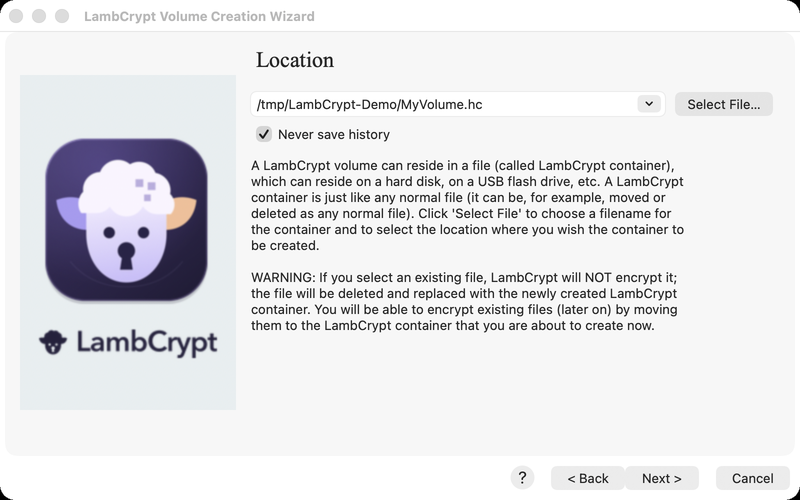
Click Next.
* After you copy unencrypted files to a LambCrypt volume, securely erase the originals. On solid-state drives and journaling file systems, erased data can remain recoverable, so it is safer to create files inside the mounted volume from the start.
Choose an encryption algorithm and a key derivation function (KDF). If you are not sure what to select, keep the defaults and click Next. For more information, see Encryption Algorithms and Hash Algorithms.
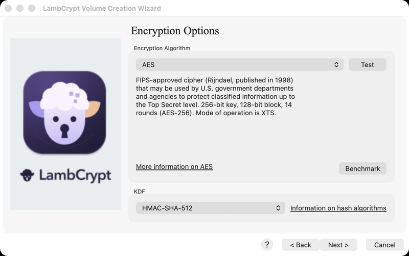
Enter the size of the container. This example creates a 250 MiB container. Click Next.
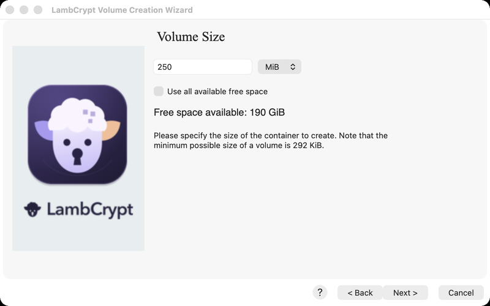
This is one of the most important steps: choose a good volume password. Read the advice in the wizard about what makes a good password. Type the password, type it again in Confirm Password, and click Next. Next stays disabled until both entries match.
You can also set a PIM or add keyfiles here. If you do, you will need them every time you mount the volume. See PIM and Keyfiles.
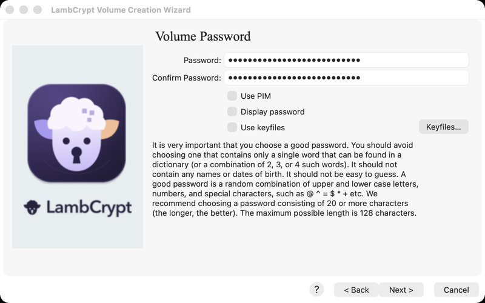
Choose the filesystem for the volume. FAT can be read on macOS, Linux and Windows. Click Next.
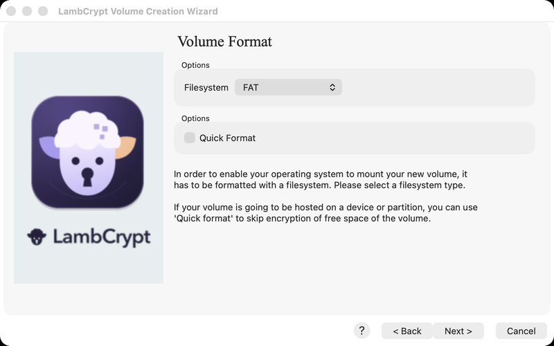
Move the mouse pointer randomly inside the wizard window for at least 30 seconds. This adds randomness that strengthens the encryption keys. Then click Format.
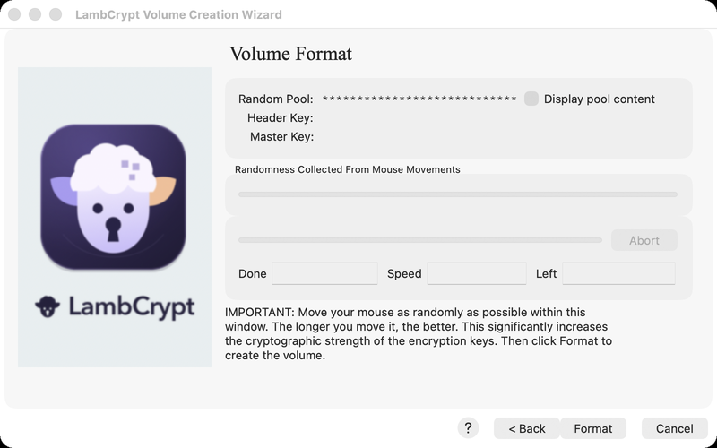
LambCrypt creates the container file. Depending on its size, this can take a long time. When it finishes, a message confirms that the volume was created. Click OK.
The volume is ready. Click Exit to close the wizard and return to the main window.
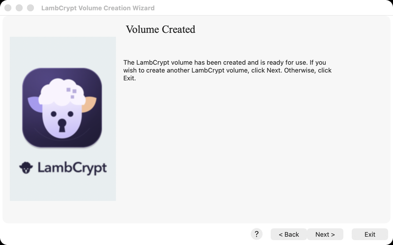
In the main window, select a free slot in the list. Click Select File and choose the container you just created, or type its path in the Volume box. Then click Mount.
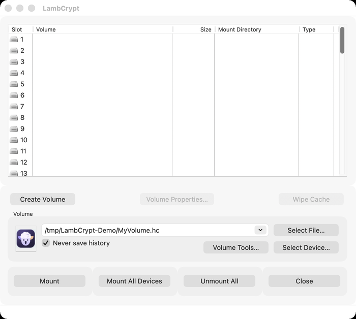
The password dialog appears. Type the password you chose in Step 8. If you set a PIM, select Use PIM and enter it. Leave KDF set to Autodetection unless you know which one the volume uses; choosing it speeds up mounting. Click OK.
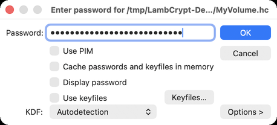
Options shows further mount settings, such as mounting the volume read-only, using the backup header, protecting a hidden volume, and choosing the mount directory.
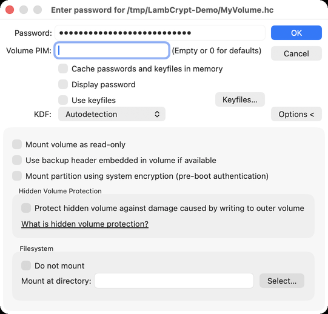
If the password is wrong, LambCrypt says so and you can try again. If it is correct, the volume is mounted.
The mounted volume appears in the LambCrypt list and in Finder like any other disk. On macOS, LambCrypt mounts volumes through its FSKit extension, which must be turned on in System Settings > General > Login Items & Extensions > By Category > File System Extensions. To open the volume, double-click it in the LambCrypt list or select it in the Finder sidebar.
The volume is encrypted in its entirety, including file names, folder names and free space. Files you save, copy or move to it are encrypted on the fly, and files you open from it are decrypted on the fly in memory. You do not need to enter the password again while the volume is mounted. LambCrypt never writes decrypted data to the disk.
To close the volume and make its files inaccessible, select it in the LambCrypt list and click Unmount, or eject it in Finder. Restarting or shutting down the computer also unmounts it. To use the files again, mount the volume as described in Steps 12 and 13.
Instead of a file container, you can encrypt a non-system partition or drive, such as a USB drive. Follow Steps 1–3, choose Encrypt a non-system partition/drive in Step 3, and follow the wizard. To mount a device-hosted volume, click Mount All Devices in the main window, or select it with Select Device.
Important: We strongly recommend that you also read the other chapters of this manual, as they contain important information that has been omitted in this tutorial for simplicity.